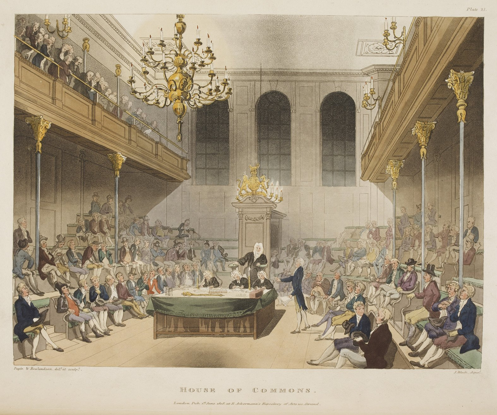

Who Decides at Home?

Télécharger la séquence
Anglais · Terminale bac pro · toutes filières · LVA, B1 vers B1+ (Help : A2+ vers B1 ; Going further : vers B2)
Format retenu : préparation au CCF et à l’épreuve ponctuelle. Ce format convient aux textes d’examen (arrêté du 17 juin 2020, annexe V) : la thématique d’un document d’épreuve relève de la vie quotidienne, sociale et citoyenne, ou de la vie professionnelle, et les cinq compétences sont chacune notées sur un cinquième.
Six lessons de 55 minutes, minutées sur 52 minutes. La séquence entraîne, sans les confondre, la situation A (une heure : oral, écrit, rédaction) et la situation B (dix minutes : cinq minutes en continu, cinq minutes en interaction, une image autorisée). Le thème : qui décide, dans un pays, dans une ville, dans un lieu de travail, et comment un élève, un salarié ou un citoyen peut être entendu.
Question directrice : Who decides, and how can a worker or a citizen be heard?
Overview (Teacher version)
Public : Terminale baccalauréat professionnel, lycée professionnel (ministère de l’Éducation nationale). Cette séquence n’est pas écrite pour le bac pro agricole.
Programme : BO spécial n° 5 du 11 avril 2019. Thèmes culturels : lieux du pouvoir, institutions, élections, services publics, engagement. Thèmes professionnels : réunion, consigne, rendre compte, formuler une proposition dans le cadre d’un projet.
Les cinq activités langagières sont entraînées dans les conditions proches de l’épreuve, avec des documents d’entraînement clairement identifiés. Le jour du CCF, les documents de compréhension doivent être inconnus.
Chaque lesson dure 55 minutes, minutée sur 52 minutes, avec un point d’arrêt et une Plan B de 8 minutes. Une seule progression pour toute la classe : les encadrés Help aident les élèves encore vers B1 ; les encadrés Going further proposent une tâche plus longue, vers B2. La différenciation se fait dans la lesson, pas par des parcours séparés.
Ordre habituel d’une lesson : rappel et flashcards ; question du jour ; document (texte, image ou audio) lu avec la spirale de Gorse ; Expanding your vocabulary ; Étude de la langue (un point utile pour la tâche du jour) ; exercices, du repérage à la production, avec corrigés en Teacher version ; tâche d’oral, y compris l’interaction, pour que chacun parle au moins une fois ; trace écrite ; homework.
En l’absence d’enregistrement audio, lisez le transcript à voix haute trois fois, avec une minute entre les lectures, comme à l’épreuve.
Lessons at a glance
| Lesson | Titre | Question du jour |
|---|---|---|
| 1 | A Room Where People Decide | Who sits, who stands, and who is not in the room? |
| 2 | Local Decisions, Public Services | Who decides close to home, and who is served? |
| 3 | Train Situation A: Listening and Reading | How do you write a clear account in French? |
| 4 | Train Situation A: Writing | How do you treat one subject, in 100 to 120 words or more? |
| 5 | Train Situation B | Can you speak for five minutes, then interact for five? |
| 6 | CCF blanc | Blanc complet, Teacher version |
Spirale de Gorse
Méthode conçue par Madame Carole Paoli Pompougnac. Le nom rend hommage à sa grand-mère par alliance, Madame Armandine Gorse, avec un S. On gravit un texte, un audio ou une image comme une pente : chaque tour est une prise plus haute. On part de ce qui saute aux yeux, puis l'attention se resserre, jusqu'à la pointe, le sommet où l'essentiel se laisse voir. Quatre tours, puis la pointe. Dans chaque lesson, appliquez la spirale au document principal (texte, image ou audio). Les réponses détaillées restent en Teacher version.

Je remarque (I notice)
Ce qui saute aux yeux, la première impression.
I notice… / This is about…
Je repère (I spot)
Un détail, un passage, un élément plus net.
I spot… / The key word is…
Je comprends (I understand)
Ce que ces éléments permettent de comprendre.
This shows that… / They have in common…
J'anticipe (I anticipate)
La visée du texte, ce qu'il faut en faire.
The text wants me to… / I anticipate…
Je trouve le sens (I find the meaning)
La pointe, le point final : l'essentiel que l'on peut défendre, et sa limite. Ce point final cadre et recentre la démarche. Il évite le hors-sujet et les conclusions hâtives qui fausseraient l'analyse du texte. On peut finir par une brève ouverture sur un autre débat.
The point is… / I keep to the text: … / I stay focused on… / Beyond this, other questions may arise and open up further exploration.
Exemple travaillé, sur The House of Commons de Rowlandson et Pugin (Teacher version)
| Tour | Question du professeur | Réponse attendue | Ce qui se resserre |
|---|---|---|---|
| 1. Je remarque | Qu’est-ce qui saute aux yeux ? | Une grande salle, des bancs en vis-à-vis, un homme debout qui parle, une foule assise. | C’est un lieu de parole publique, pas un bureau privé. |
| 2. Je repère | Où est le pouvoir, dans l’image ? | Au centre, celui qui se tient debout ; autour, ceux qui écoutent ou discutent ; en hauteur, des tribunes. | Décider, ici, c’est aussi écouter, et être vu. |
| 3. Je comprends | Que permet de comprendre cette disposition ? | Une décision collective a besoin d’une salle, de règles, et de personnes qui prennent la parole. | On relie la gravure aux décisions plus proches : mairie, service public, réunion d’équipe. |
| 4. J’anticipe | Que ferons-nous de cette gravure à l’oral de l’épreuve ? | Elle peut servir d’image autorisée pour parler d’une décision, sans lire un texte. | On anticipe le hors-sujet : une leçon sur le Parlement britannique du XIXe siècle seulement. |
| 5. Je trouve le sens | L’essentiel, et sa limite ? | Être entendu suppose un lieu, et une prise de parole préparée. Limite : tout le monde n’est pas dans la salle ; encore faut-il demander comment les autres sont représentés. | Une phrase utile pour l’oral, avec sa réserve. |
Lesson 1 · A Room Where People Decide
Activités : CE, PE, PO, interaction.
By the end of this lesson, I can: describe the engraving, and say what a place of decision looks like.
Question du jour : Who sits, who stands, and who is not in the room?
Spirale de Gorse
Dans chaque lesson, appliquez la spirale au document principal (texte, image ou audio). Les réponses détaillées restent en Teacher version.
Je remarque (I notice)
Ce qui saute aux yeux, la première impression.
I notice… / This is about…
Je repère (I spot)
Un détail, un passage, un élément plus net.
I spot… / The key word is…
Je comprends (I understand)
Ce que ces éléments permettent de comprendre.
This shows that… / They have in common…
J'anticipe (I anticipate)
La visée du texte, ce qu'il faut en faire.
The text wants me to… / I anticipate…
Je trouve le sens (I find the meaning)
La pointe, le point final : l'essentiel que l'on peut défendre, et sa limite. Ce point final cadre et recentre la démarche. Il évite le hors-sujet et les conclusions hâtives qui fausseraient l'analyse du texte. On peut finir par une brève ouverture sur un autre débat.
The point is… / I keep to the text: … / I stay focused on… / Beyond this, other questions may arise and open up further exploration.
Minutage (52 minutes)
| Minutes | Étape | Activité |
|---|---|---|
| 0 à 6 | Diagnostic, non noté : Name one decision that affects your workplace or your town. Who made it? | PE |
| 6 à 22 | Spirale de Gorse sur la gravure. | CE, PO |
| 22 à 30 | Expanding your vocabulary. | CE |
| 30 à 38 | Étude de la langue : a decision is made / people decide / I was not asked. (passive simple, en réception et en production guidée). | PE |
| 38 à 46 | Interaction : Who is not in this room? Why does that matter? | PO, interaction |
| 46 à 52 | Lesson summary, homework. | PE |
Point d’arrêt (minute 46). La question « who is not in the room » a été tentée.
Help : utilisez I can see a large room, a man is standing, many people are sitting. Going further : say who is not in the room, and why that matters, in four lines.
Plan B (8 minutes). Trois phrases dictées : This is a large room. A man is standing and speaking. Many people are listening.
Expanding your vocabulary
| Word | Meaning | Example |
|---|---|---|
| to decide | to make a choice that others must follow | The council will decide next week. |
| a decision | the choice that was made | The decision was explained in a meeting. |
| a council | a local elected body | The city council decides on the bus route. |
| a public service | a service organised for everyone (library, bus, hospital administration, job centre) | The library is a public service. |
| to be heard | to have your view listened to | Workers want to be heard in the meeting. |
| a meeting | a planned discussion | We had a staff meeting on Monday. |
| to vote | to choose formally | People vote for the council. |
Homework
Huit mots. En cinq lignes : Who stands, who sits, and who is missing, in the engraving?
Lesson 2 · Local Decisions, Public Services
Activités : CO, CE, PE, PO.
By the end of this lesson, I can: understand a short local announcement, and say how a service or a workplace meeting works.
Question du jour : Who decides close to home, and who is served?
Spirale de Gorse
Dans chaque lesson, appliquez la spirale au document principal (texte, image ou audio). Les réponses détaillées restent en Teacher version.
Je remarque (I notice)
Ce qui saute aux yeux, la première impression.
I notice… / This is about…
Je repère (I spot)
Un détail, un passage, un élément plus net.
I spot… / The key word is…
Je comprends (I understand)
Ce que ces éléments permettent de comprendre.
This shows that… / They have in common…
J'anticipe (I anticipate)
La visée du texte, ce qu'il faut en faire.
The text wants me to… / I anticipate…
Je trouve le sens (I find the meaning)
La pointe, le point final : l'essentiel que l'on peut défendre, et sa limite. Ce point final cadre et recentre la démarche. Il évite le hors-sujet et les conclusions hâtives qui fausseraient l'analyse du texte. On peut finir par une brève ouverture sur un autre débat.
The point is… / I keep to the text: … / I stay focused on… / Beyond this, other questions may arise and open up further exploration.
Minutage (52 minutes)
| Minutes | Étape | Activité |
|---|---|---|
| 0 à 6 | Rappel du lexique. | PO |
| 6 à 20 | Écoute trois fois. Compte rendu en français. | CO |
| 20 à 32 | Lecture d’un avis de réunion ou d’un service (texte d’entraînement). | CE |
| 32 à 40 | Étude de la langue : you can / you may / you have to apply ; giving a reason (so that, because). | PE |
| 40 à 48 | Oral : In my workplace, a decision about… is made by… | PO |
| 48 à 52 | Homework. |
Point d’arrêt (minute 48). Une décision de proximité a été formulée.
Plan B (8 minutes). Un avis simple : date, lieu, objet de la réunion.
Transcript (Teacher version)
This is a message from the city council. On Tuesday 12 May, there will be a public meeting at seven o’clock in the town hall, about the new Sunday bus service. Residents, shop workers and students are welcome. You may speak for two minutes, if you put your name on the list at the door. If you cannot come, you can write to the transport office before Friday. The council will decide on 20 May. The aim is a bus that serves people who work on Sundays, including in shops and hospitals, and people who visit the library.
Corrigé CO (Teacher version). Message de la mairie. Réunion publique mardi 12 mai à 19 h, hôtel de ville, au sujet du bus du dimanche. Habitants, salariés des commerces, élèves sont les bienvenus. On peut parler deux minutes en s’inscrivant à l’entrée. Sinon, écrire au service des transports avant vendredi. Décision le 20 mai. But : un bus pour ceux qui travaillent le dimanche, y compris dans les commerces et les hôpitaux, et pour les usagers de la bibliothèque.
Homework
En huit lignes, reliez une décision de votre lieu de formation (horaires, règlement, projet) à la question : who was asked, and who was not?
Lesson 3 · Train Situation A: Listening and Reading
Activités : CO, CE, PE.
By the end of this lesson, I can: write a clear account in French after three listenings, and after reading a short text.
Question du jour : How do you write a clear account in French?
Méthode, puis entraînement chronométré, plus court que l’épreuve (pas encore l’heure complète).
Spirale de Gorse
Dans chaque lesson, appliquez la spirale au document principal (texte, image ou audio). Les réponses détaillées restent en Teacher version.
Je remarque (I notice)
Ce qui saute aux yeux, la première impression.
I notice… / This is about…
Je repère (I spot)
Un détail, un passage, un élément plus net.
I spot… / The key word is…
Je comprends (I understand)
Ce que ces éléments permettent de comprendre.
This shows that… / They have in common…
J'anticipe (I anticipate)
La visée du texte, ce qu'il faut en faire.
The text wants me to… / I anticipate…
Je trouve le sens (I find the meaning)
La pointe, le point final : l'essentiel que l'on peut défendre, et sa limite. Ce point final cadre et recentre la démarche. Il évite le hors-sujet et les conclusions hâtives qui fausseraient l'analyse du texte. On peut finir par une brève ouverture sur un autre débat.
The point is… / I keep to the text: … / I stay focused on… / Beyond this, other questions may arise and open up further exploration.
Minutage (52 minutes)
| Minutes | Étape | Activité |
|---|---|---|
| 0 à 8 | Méthode du compte rendu : qui, quoi, où, quand, pourquoi, point de vue. | CE |
| 8 à 24 | CO d’entraînement, trois écoutes, compte rendu en français. | CO |
| 24 à 40 | CE d’entraînement, compte rendu guidé par des questions. | CE |
| 40 à 50 | Comparaison avec le corrigé (Teacher version projetée ou dictée après coup). | |
| 50 à 52 | Homework. |
Point d’arrêt (minute 40). Les deux comptes rendus existent.
Plan B (8 minutes). Une seule écoute, cinq mots-clés, trois phrases en français.
Transcript d’entraînement (Teacher version)
I work at the library desk. Last month the council asked us to close on Wednesday afternoons, to save money. We wrote a short letter, and we collected comments from students who come after school. We were heard, in part: the library still closes on Wednesday, but it now opens on Sunday morning, from ten to one. It is not perfect. Some of us work the Sunday slot, and we had to change our plans. But the decision is clearer, and the service is there for people who work during the week.
Corrigé CO (Teacher version). Une personne à l’accueil d’une bibliothèque. La mairie voulait fermer le mercredi après-midi, pour des raisons d’économie. Une lettre, des avis d’élèves. Ils ont été entendus en partie : fermeture le mercredi maintenue, ouverture le dimanche matin, 10 h-13 h. Ce n’est pas parfait : certains travaillent ce créneau et ont dû changer leurs habitudes. La décision est plus claire, le service existe pour ceux qui travaillent en semaine.
Texte CE d’entraînement
A decision is stronger when people can hear it, and answer it. In a workplace, a staff meeting can be that room. In a town, a council meeting, a letter, or a public meeting can be that room. You do not need to shout. You need a clear fact, a clear request, and a time limit. In this sequence, the House of Commons engraving is only a starting point. The question remains local: who decides, who is served, and how can you be heard without wasting the meeting.
Corrigé CE (Teacher version). Une décision est plus solide si l’on peut l’entendre et y répondre. Au travail, une réunion d’équipe peut être cette salle ; en ville, un conseil, une lettre, une réunion publique. Inutile de crier : un fait, une demande, un délai. La gravure n’est qu’un point de départ. La question reste proche : qui décide, qui est servi, comment être entendu sans faire perdre la réunion.
Homework
Refaites le compte rendu de l’oral de mémoire, en français, en une dizaine de lignes, puis comparez.
Lesson 4 · Train Situation A: Writing
Activités : PE, CE.
By the end of this lesson, I can: write 100 to 120 words or more on one subject, with a fact, a request, and a limit.
Question du jour : How do you treat one subject, in 100 to 120 words or more?
Spirale de Gorse
Dans chaque lesson, appliquez la spirale au document principal (texte, image ou audio). Les réponses détaillées restent en Teacher version.
Je remarque (I notice)
Ce qui saute aux yeux, la première impression.
I notice… / This is about…
Je repère (I spot)
Un détail, un passage, un élément plus net.
I spot… / The key word is…
Je comprends (I understand)
Ce que ces éléments permettent de comprendre.
This shows that… / They have in common…
J'anticipe (I anticipate)
La visée du texte, ce qu'il faut en faire.
The text wants me to… / I anticipate…
Je trouve le sens (I find the meaning)
La pointe, le point final : l'essentiel que l'on peut défendre, et sa limite. Ce point final cadre et recentre la démarche. Il évite le hors-sujet et les conclusions hâtives qui fausseraient l'analyse du texte. On peut finir par une brève ouverture sur un autre débat.
The point is… / I keep to the text: … / I stay focused on… / Beyond this, other questions may arise and open up further exploration.
Minutage (52 minutes)
| Minutes | Étape | Activité |
|---|---|---|
| 0 à 8 | Relire deux sujets modèles, choisir une méthode (plan en trois points). | CE |
| 8 à 16 | Étude de la langue : I would like to… I suggest… However… | PE |
| 16 à 42 | Rédaction d’un des deux sujets, 100 à 120 mots au moins, comme à l’épreuve. | PE |
| 42 à 50 | Relecture guidée (longueur, sujet, une limite). Pas de correction complète en classe. | PE |
| 50 à 52 | Homework. |
Point d’arrêt (minute 42). Le texte atteint la longueur minimale.
Help : plan en trois phrases (the problem, what I ask, one limit), puis développez. Going further : ajoutez un exemple chiffré ou un cas d’équipe.
Plan B (8 minutes). Plan en trois phrases, puis cinq phrases rédigées.
Sujets d’entraînement
Sujet 1, vie professionnelle : Your workplace will change the staff meeting from Wednesday to Friday, at 7 a.m. Write to the manager: what the problem is for you or for the team, and what you suggest.
Sujet 2, vie quotidienne : A public service near you (library, bus, sports hall) may close one day a week. Write a short message to the council: who will be affected, and what you ask for.
Homework
Réécrivez seulement l’introduction et la phrase de limite, en les améliorant.
Lesson 5 · Train Situation B
Activités : PO, interaction, PE.
By the end of this lesson, I can: speak for five minutes on a decision, with an image, then answer questions for five minutes, without reading a full text.
Question du jour : Can you speak for five minutes, then interact for five?
L’image autorisée peut être la gravure, ou un document de la séquence (avis de réunion, schéma d’une salle). Interdit : lire un texte rédigé in extenso.
Spirale de Gorse
Dans chaque lesson, appliquez la spirale au document principal (texte, image ou audio). Les réponses détaillées restent en Teacher version.
Je remarque (I notice)
Ce qui saute aux yeux, la première impression.
I notice… / This is about…
Je repère (I spot)
Un détail, un passage, un élément plus net.
I spot… / The key word is…
Je comprends (I understand)
Ce que ces éléments permettent de comprendre.
This shows that… / They have in common…
J'anticipe (I anticipate)
La visée du texte, ce qu'il faut en faire.
The text wants me to… / I anticipate…
Je trouve le sens (I find the meaning)
La pointe, le point final : l'essentiel que l'on peut défendre, et sa limite. Ce point final cadre et recentre la démarche. Il évite le hors-sujet et les conclusions hâtives qui fausseraient l'analyse du texte. On peut finir par une brève ouverture sur un autre débat.
The point is… / I keep to the text: … / I stay focused on… / Beyond this, other questions may arise and open up further exploration.
Minutage (52 minutes)
| Minutes | Étape | Activité |
|---|---|---|
| 0 à 8 | Préparer un plan en mots-clés (trois points, une limite). | PE |
| 8 à 46 | Passages : 5 minutes + questions (le professeur ajuste la durée si le groupe est nombreux, et termine en lesson 6 si besoin). | PO, interaction |
| 46 à 50 | Autoévaluation. | PE |
| 50 à 52 | Homework : relire le plan, pas le texte. |
Point d’arrêt. Les élèves non entendus passent en lesson 6, avant ou après le blanc écrit, selon l’organisation.
Help : trois points en mots-clés et l’image ; pas de texte lu. Going further : préparez une réponse à « Who was not asked? ».
Plan B (8 minutes). Trois points dits par trois élèves, une question à la classe.
Questions d’interaction possibles : Who was not in the room? What would you change in a staff meeting? Why is a time limit useful? How did the engraving help you? What do you do if nobody listens at first?
Lesson 6 · Évaluation blanche au format du CCF et de l’épreuve ponctuelle (Teacher version)
Rappel du format officiel (arrêté du 17 juin 2020, annexe V ; grilles : note de service du 24 novembre 2021, BO n° 47 du 16 décembre 2021) :
- Situation A, écrite, 1 heure : compréhension de l’oral (document de 1 min 30 au plus, entendu trois fois, une minute entre les écoutes, compte rendu en français) ; compréhension de l’écrit (document authentique inconnu de 15 lignes de 70 caractères au plus, compte rendu en français) ; expression écrite (deux sujets au choix, l’un sur la vie quotidienne, l’autre sur la vie professionnelle, 100 à 120 mots au moins).
- Situation B, orale, 10 minutes : expression orale en continu, 5 minutes au plus, sur un travail, un projet, un produit, un service ou une expérience professionnelle, sans lecture ; notes et une image autorisées ; puis interaction, 5 minutes au plus.
- Élèves des établissements publics ou privés sous contrat et apprentis des CFA habilités : CCF. Autres candidats : épreuve ponctuelle, mêmes activités, une partie écrite d’une heure et une partie orale de dix minutes, au dernier trimestre. Les deux temps sont indépendants.
Chaque activité langagière est notée sur 20, puis compte pour un cinquième de la note finale. Niveau attendu : B1+ en LVA, A2+ en LVB.
Ce sujet sert d’entraînement blanc en Terminale. Teacher version seulement, sauf la rubrique « If a student cannot attend class or is in hospital ».
Cette lesson fait le blanc écrit complet (situation A). La situation B, si elle n’a pas été entendue pour tous en lesson 5, se poursuit ici ou sur un créneau oral dédié, comme à l’examen (dix minutes par élève, indépendantes de l’écrit).
Situation A (52 minutes, comme à l’épreuve dans le temps de la lesson ; le jour de l’examen, l’écrit dure une heure)
Transcript CO (Teacher version) :
This is a recorded message from the transport office. The council has decided to keep the Sunday bus, but only in the morning, from eight to twelve. The afternoon service will stop in June, because too few people used it. Shop workers and hospital staff have asked for a late bus, at about eight in the evening. The council will look at this request in September, not before. If this late bus matters to you, please write before 15 June, and say which hours you work. A meeting will take place on 30 June, at six, in the town hall. You may speak if you put your name on the list.
Corrigé CO (Teacher version). Service des transports. Le conseil a décidé de garder le bus du dimanche, le matin seulement, 8 h-12 h. Le service de l’après-midi s’arrête en juin, faute d’usagers assez nombreux. Des salariés des commerces et des hôpitaux demandent un bus tardif, vers 20 h. Le conseil n’examinera cette demande qu’en septembre. Si ce bus compte, écrire avant le 15 juin en indiquant les horaires de travail. Réunion le 30 juin à 18 h, hôtel de ville ; on peut parler en s’inscrivant.
Texte CE (texte d’entraînement ; le jour du CCF, document authentique inconnu) :
Who decides at home? The question is not only about Parliament, even if the 1808 engraving shows a famous room. It is also about a staff meeting, a council vote, a bus route, a library hour. In this sequence you have practised the account in French, the 100-word message, and the ten-minute oral. Being heard is a professional skill as well as a civic one: you bring a fact, a request, and a limit. You do not need to speak for a long time. You need to be clear, and to leave time for the other person to answer.
Questions : Pourquoi la question dépasse-t-elle le Parlement ? Quelles activités d’épreuve ont été entraînées ? Que signifie « être entendu », selon le texte ? Quelle est la limite proposée ?
Corrigé CE (Teacher version). La question vaut aussi pour une réunion d’équipe, un vote municipal, une ligne de bus, un horaire de bibliothèque. La séquence a entraîné le compte rendu en français, le message de 100 mots, l’oral de dix minutes. Être entendu est une compétence professionnelle autant que citoyenne : un fait, une demande, une limite. Inutile de parler longtemps : il faut être clair, et laisser à l’autre le temps de répondre.
Expression écrite. Sujet 1, vie professionnelle : Write to your manager about a meeting time that does not work for part of the team (100 to 120 words or more): the problem, your suggestion, one limit. Sujet 2, vie quotidienne : Write to the council about a public service (bus, library, sports hall): who is affected, what you ask for, and when you need an answer.
Situation B
Présentez, en cinq minutes, une décision qui vous concerne (lieu de formation, service public, projet d’équipe) : qui a décidé, qui a été entendu, ce que vous auriez demandé. La gravure, ou un autre document de la séquence, est autorisée comme image. Puis répondez aux questions.
Questions : Who was not asked? Why does a public meeting need a time limit? What is the difference between a rumour and a decision? How can a worker be heard without breaking the meeting?
Grille nationale bac pro LVA (BO n° 47 du 16 décembre 2021, annexe 4), Teacher version
Chaque activité langagière est notée sur 20, puis ramenée pour un cinquième de la note finale. Repères de classe, alignés sur le B1+ visé en LVA (A2+ en LVB) :
| Activité | 1 à 5 | 6 à 10 | 11 à 15 | 16 à 20 |
|---|---|---|---|---|
| CO | Quelques mots isolés | Le sujet général est repéré | Les informations principales sont rendues en français | L’essentiel, des détails et le point de vue sont rendus |
| CE | Quelques éléments isolés | Le thème et quelques faits | Les informations principales, liées entre elles | L’essentiel, des détails et l’implicite |
| PE | Hors sujet ou trop court | Sujet abordé, langue encore hésitante | Sujet traité, 100 mots au moins, langue compréhensible | Argument nuancé, lexique professionnel, langue assez sûre |
| PO (continu et interaction) | Lecteur, propos très court | Présente avec aide, répond peu | Présente sans lire, répond de façon simple | Présente clairement, interagit, lexique de la séquence |
If a student cannot attend class or is in hospital
L’épreuve blanche peut se faire à la maison ou à l’hôpital, sans aide, en respectant la durée. L’élève note l’heure de début et de fin. Le document audio, ou le texte lu par l’enseignante et enregistré, est déposé sur l’ENT ; l’élève l’écoute trois fois, avec une minute de pause entre les écoutes, sans revenir en arrière. L’oral se fait par enregistrement (présentation), puis par un échange au téléphone ou en visioconférence avec l’enseignante, ou à défaut par trois questions écrites envoyées après l’enregistrement. Version courte (fatigue) : une seule partie de l’écrit et la présentation orale.
Sources
- Programme de langues vivantes, BO spécial n° 5 du 11 avril 2019.
- Épreuve de langue vivante, arrêté du 17 juin 2020, annexe V ; grilles, BO n° 47 du 16 décembre 2021.
- Thomas Rowlandson et Augustus Charles Pugin, The House of Commons, The Microcosm of London, 1808-1810, British Library, domaine public. Image : Wikimedia Commons.
© 2026 Madame Carole Paoli Pompougnac · CC BY-NC-SA 4.0